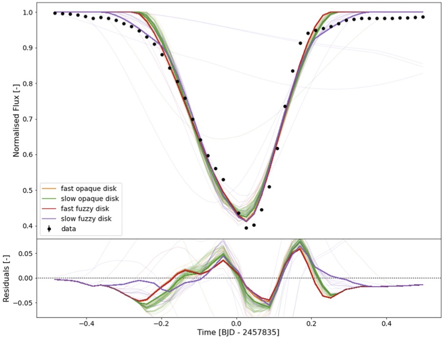

Publications
My complete list of publications with written contributions is listed below. Click on the title to download a PDF of the publication. ADS Library of Matthew Kenworthy's publications.
Reference-star differential imaging on SPHERE/IRDIS
Xie, Chen, Choquet, Elodie, Vigan, Arthur et al. (2022)
Astronomy and Astrophysics, 666, A32 [ADS]
An optimized survey strategy for the ERIS/NIX imager: searching for young giant exoplanets and very low mass brown dwarfs using the K-peak custom photometric filter
Dubber, Sophie, Biller, Beth, Bonavita, Mariangela et al. (2022)
Monthly Notices of the Royal Astronomical Society, 515, 5629 [ADS]
The V773 Tau system is a quintuple system, with two binary systems orbiting each other, and a fifth distant component orbiting the double-double. A circumbinary disk around B transited the A component. Kenworthy et al. (2022).
Eclipse of the V773 Tau B circumbinary disc
Kenworthy, M. A., González Picos, D., Elizondo, E. et al. (2022)
Astronomy and Astrophysics, 666, A61 [ADS]
The JWST Early Release Science Program for the Direct Imaging and Spectroscopy of Exoplanetary Systems
Hinkley, Sasha, Carter, Aarynn L., Ray, Shrishmoy et al. (2022)
Publications of the Astronomical Society of the Pacific, 134, 095003 [ADS]
A low mass substellar companion to the 9 Solar mass star μ2 Sco - this star will ultimately undergo a supernova. Squicciarini et al. (2022).
A scaled-up planetary system around a supernova progenitor
Squicciarini, V., Gratton, R., Janson, M. et al. (2022)
Astronomy and Astrophysics, 664, A9 [ADS]
XPipeline: starlight subtraction at scale for MagAO-X
Long, Joseph D., Males, Jared R., Haffert, Sebastiaan Y. et al. (2022)
Adaptive Optics Systems VIII, 12185, 121853P [ADS]
L-band Integral Field Spectroscopy of the HR 8799 Planetary System
Doelman, David S., Stone, Jordan M., Briesemeister, Zackery W. et al. (2022)
The Astronomical Journal, 163, 217 [ADS]
Exocomets size distribution in the β ? Pictoris planetary system
Lecavelier des Etangs, Alain, Cros, Lucie, Hébrard, Guillaume et al. (2022)
Scientific Reports, 12, 5855 [ADS]
Circumbinary Disk Evolution in the Presence of an Outer Companion Star
Martin, Rebecca G., Lepp, Stephen, Lubow, Stephen H. et al. (2022)
The Astrophysical Journal, 927, L26 [ADS]
Three circumsecondary disks have been discovered in transit in Kepler satellite photometry data. These disks are not much larger than their stars, almost certainly with a substellar companion holding them in place. The apparent longevity of these disks is still to be explained. van der Kamp et al. (2022).
K2 discovery of a circumsecondary disk transiting EPIC 220208795
van der Kamp, L., van Dam, D. M., Kenworthy, M. A. et al. (2022)
Astronomy and Astrophysics, 658, A38 [ADS]
Unveiling wide-orbit companions to K-type stars in Sco-Cen with Gaia EDR3
Bohn, Alexander J., Ginski, Christian, Kenworthy, Matthew A. et al. (2022)
Astronomy and Astrophysics, 657, A53 [ADS]
The exoplanet b Cen (AB)b imaged around a binary star system that will ultimately undergo a supernova. Janson et al. (2021).
A wide-orbit giant planet in the high-mass b Centauri binary system
Janson, Markus, Gratton, Raffaele, Rodet, Laetitia et al. (2021)
Nature, 600, 231 [ADS]
Cryogenic characterization of the grating vector apodizing phase plate coronagraph for the enhanced resolution imager and spectrograph at the Very Large Telescope
Boehle, Anna, Doelman, David, Konrad, Björn S. et al. (2021)
Journal of Astronomical Telescopes, Instruments, and Systems, 7, 045001 [ADS]
Detecting life outside our solar system with a large high-contrast-imaging mission
Snellen, Ignas A. G., Snik, F., Kenworthy, M. et al. (2021)
Experimental Astronomy, None [ADS]
Exoplanets with ELT-METIS. I. Estimating the direct imaging exoplanet yield around stars within 6.5 parsecs
Bowens, R., Meyer, M. R., Delacroix, C. et al. (2021)
Astronomy and Astrophysics, 653, A8 [ADS]
Comparing three different methods of high contrast imaging with the gvAPP coronagraph and the star HD 2562 and its companion Sutlieff et al. (2021).
High-contrast observations of brown dwarf companion HR 2562 B with the vector Apodizing Phase Plate coronagraph
Sutlieff, Ben J., Bohn, Alexander J., Birkby, Jayne L. et al. (2021)
Monthly Notices of the Royal Astronomical Society, 506, 3224 [ADS]
Spectral and angular differential imaging with SPHERE/IFS. Assessing the performance of various PCA-based approaches to PSF subtraction
Kiefer, S., Bohn, A. J., Quanz, S. P. et al. (2021)
Astronomy and Astrophysics, 652, A33 [ADS]
The activity cycle of the star J1407 is shown in the change of the measured rotation period as the starspots move from the equator to the poles in Barmentloo et al. (2021).
A search for transiting companions in the J1407 (V1400 Cen) system
Barmentloo, S., Dik, C., Kenworthy, M. A. et al. (2021)
Astronomy and Astrophysics, 652, A117 [ADS]
Vector-apodizing phase plate coronagraph: design, current performance, and future development [Invited]
Doelman, D. S., Snik, F., Por, E. H. et al. (2021)
Applied Optics, 60, D52 [ADS]
Pupil-Plane Phase Apodization
Kenworthy, Matthew A., Codona, Johanan L., Snik, Frans et al. (2021)
The WSPC Handbook of Astronomical Instrumentation, Volume 3: UV, Optical & IR Instrumentation: Part 2, None, 377 [ADS]
Lessons learned from SPHERE for the astrometric strategy of the next generation of exoplanet imaging instruments
Maire, Anne-Lise, Langlois, Maud, Delorme, Philippe et al. (2021)
Journal of Astronomical Telescopes, Instruments, and Systems, 7, 035004 [ADS]
Spectroscopy of the exoplanet YSES 1b showing the presence of 13CO in the infrared spectrum from 2.35 to 2.40 microns Zhang et al. (2021).
The 13CO-rich atmosphere of a young accreting super-Jupiter
Zhang, Yapeng, Snellen, Ignas A. G., Bohn, Alexander J. et al. (2021)
Nature, 595, 370 [ADS]
High-precision Astrometric Studies in Direct Imaging with SPHERE
Maire, A. -L., Chauvin, G., Vigan, A. et al. (2021)
The Messenger, 183, 7 [ADS]
A MUSE view of the asymmetric jet from HD 163296
Xie, C., Haffert, S. Y., de Boer, J. et al. (2021)
Astronomy and Astrophysics, 650, L6 [ADS]
A high-contrast search for variability in HR 8799bc with VLT-SPHERE
Biller, Beth A., Apai, Dániel, Bonnefoy, Mickaël et al. (2021)
Monthly Notices of the Royal Astronomical Society, 503, 743 [ADS]
A search of the Hill sphere around the young exoplanet Beta Pictoris b through photometric monitoring from several observatories places strong upper limits for the dust, implying that all material has condensed into moons or accreted away: Kenworthy et al. (2021).
The β Pictoris b Hill sphere transit campaign. I. Photometric limits to dust and rings
Kenworthy, M. A., Mellon, S. N., Bailey, J. I. et al. (2021)
Astronomy and Astrophysics, 648, A15 [ADS]
YSES 2b, the second exoplanet system discovered as part of the YSES survey, with a mass of 6 Jupiters. Bohn et al. (2021).
Discovery of a directly imaged planet to the young solar analog YSES 2
Bohn, Alexander J., Ginski, Christian, Kenworthy, Matthew A. et al. (2021)
Astronomy and Astrophysics, 648, A73 [ADS]
BEAST begins: sample characteristics and survey performance of the B-star Exoplanet Abundance Study
Janson, Markus, Squicciarini, Vito, Delorme, Philippe et al. (2021)
Astronomy and Astrophysics, 646, A164 [ADS]
Exoplanet Imaging Data Challenge: benchmarking the various image processing methods for exoplanet detection
Cantalloube, F., Gomez-Gonzalez, C., Absil, O. et al. (2021)
arXiv e-prints, None, arXiv:2101.05080 [ADS]
A tilted disk surrounding an unseen substellar companion is the best explanation for the asymmetric light curve seen towards the youny binary M dwarf system V838 Tau. van Dam et al. (2020).
An Asymmetric Eclipse Seen toward the Pre-main-sequence Binary System V928 Tau
van Dam, Dirk M., Kenworthy, Matthew A., David, Trevor J. et al. (2020)
The Astronomical Journal, 160, 285 [ADS]
Searching for proto-planets with MUSE
Xie, C., Haffert, S. Y., de Boer, J. et al. (2020)
Astronomy and Astrophysics, 644, A149 [ADS]
Exoplanet imaging data challenge: benchmarking the various image processing methods for exoplanet detection
Cantalloube, F., Gomez-Gonzalez, C., Absil, O. et al. (2020)
Society of Photo-Optical Instrumentation Engineers (SPIE) Conference Series, 11448, 114485A [ADS]
The periodic brightening and dimming of a star in Kepler can be modeled as the transit of a close-in planet with a circumplanetary disk that shows forward scattering. van Kooten et al. (2020).
Periodic brightening of Kepler light curves: investigating the possibility of forward scattering due to dust clouds
van Kooten, M. A. M., Kenworthy, M., Doelman, N. et al. (2020)
Monthly Notices of the Royal Astronomical Society, 499, 2817 [ADS]
METIS high-contrast imaging: design and expected performance (Erratum)
Carlomagno, Brunella, Delacroix, Christian, Absil, Olivier et al. (2020)
Journal of Astronomical Telescopes, Instruments, and Systems, 6, 049801 [ADS]
Disk Evolution Study Through Imaging of Nearby Young Stars (DESTINYS): A close low-mass companion to ET Cha
Ginski, C., Ménard, F., Rab, Ch. et al. (2020)
Astronomy and Astrophysics, 642, A119 [ADS]
Unveiling the β Pictoris system, coupling high contrast imaging, interferometric, and radial velocity data
Lagrange, A. M., Rubini, P., Nowak, M. et al. (2020)
Astronomy and Astrophysics, 642, A18 [ADS]
METIS high-contrast imaging: design and expected performance
Carlomagno, Brunella, Delacroix, Christian, Absil, Olivier et al. (2020)
Journal of Astronomical Telescopes, Instruments, and Systems, 6, 035005 [ADS]
The discovery of a substellar companion to RZ Psc provides an explanation for the frequent but irregular dimming events seen towards the star - material is peturbed by the companion. Kennedy et al. (2020).
A low-mass stellar companion to the young variable star RZ Psc
Kennedy, Grant M., Ginski, Christian, Kenworthy, Matthew A. et al. (2020)
Monthly Notices of the Royal Astronomical Society, 496, L75 [ADS]
A second planetary mass companion to TYC 8998, with a mass of 6 Jupiters, making it the third directly imaged multiple exoplanet system. Bohn et al. (2020).
Two Directly Imaged, Wide-orbit Giant Planets around the Young, Solar Analog TYC 8998-760-1
Bohn, Alexander J., Kenworthy, Matthew A., Ginski, Christian et al. (2020)
The Astrophysical Journal, 898, L16 [ADS]
First Images of the Protoplanetary Disk around PDS 201
Wagner, Kevin, Stone, Jordan, Dong, Ruobing et al. (2020)
The Astronomical Journal, 159, 252 [ADS]
A planet within the debris disk around the pre-main-sequence star AU Microscopii
Plavchan, Peter, Barclay, Thomas, Gagné, Jonathan et al. (2020)
Nature, 582, 497 [ADS]
Robustness of prediction for extreme adaptive optics systems under various observing conditions. An analysis using VLT/SPHERE adaptive optics data
van Kooten, M. A. M., Doelman, N., Kenworthy, M. et al. (2020)
Astronomy and Astrophysics, 636, A81 [ADS]
A multiplicity study of transiting exoplanet host stars. I. High-contrast imaging with VLT/SPHERE
Bohn, A. J., Southworth, J., Ginski, C. et al. (2020)
Astronomy and Astrophysics, 635, A73 [ADS]
The Single-mode Complex Amplitude Refinement (SCAR) coronagraph. II. Lab verification, and toward the characterization of Proxima b
Haffert, S. Y., Por, E. H., Keller, C. U. et al. (2020)
Astronomy and Astrophysics, 635, A56 [ADS]
MASCARA-4 b/bRing-1 b: A retrograde hot Jupiter around a bright A-type star
Dorval, P., Talens, G. J. J., Otten, G. P. P. L. et al. (2020)
Astronomy and Astrophysics, 635, A60 [ADS]
A multiplicity study of transiting exoplanet host stars. II. Revised properties of transiting planetary systems with companions
Southworth, J., Bohn, A. J., Kenworthy, M. A. et al. (2020)
Astronomy and Astrophysics, 635, A74 [ADS]
 The solar mass star TYC 8998 and its planetary mass companion TYC 8998b, indicated by a white arrow. Bohn et al. (2020).
The solar mass star TYC 8998 and its planetary mass companion TYC 8998b, indicated by a white arrow. Bohn et al. (2020).
The Young Suns Exoplanet Survey: Detection of a wide-orbit planetary-mass companion to a solar-type Sco-Cen member
Bohn, A. J., Kenworthy, M. A., Ginski, C. et al. (2020)
Monthly Notices of the Royal Astronomical Society, 492, 431 [ADS]
An unresolved point source seen by ALMA towards the young star J1407. The detection may be a giant exoring system heated by its central source. The star is not seen at these wavelengths and sensitivities. Kenworthy et al. (2020).
ALMA and NACO observations towards the young exoring transit system J1407 (V1400 Cen)
Kenworthy, M. A., Klaassen, P. D., Min, M. et al. (2020)
Astronomy and Astrophysics, 633, A115 [ADS]
High contrast imaging with ELT/METIS: The wind driven halo, from SPHERE to METIS
Cantalloube, Faustine, Absil, Olivier, Bertram, Thomas et al. (2019)
arXiv e-prints, None, arXiv:1911.11241 [ADS]
Bright Southern Variable Stars in the bRing Survey
Mellon, Samuel N., Mamajek, Eric E., Stuik, Remko et al. (2019)
The Astrophysical Journal Supplement Series, 244, 15 [ADS]
Revisiting the pulsational characteristics of the exoplanet host star β Pictoris
Zwintz, K., Reese, D. R., Neiner, C. et al. (2019)
Astronomy and Astrophysics, 627, A28 [ADS]
Sensitivity of the spectroscopic transit search method applied to Beta Pictoris, showing that Saturn radius exoplanets can be recovered from high spectral resolution spectra of rapidly rotating stars without need for refernce star observations. van Sluijs et al. (2019).
Spectroscopic transit search: a self-calibrating method for detecting planets around bright stars
van Sluijs, Lennart, de Mooij, Ernst, Kenworthy, Matthew et al. (2019)
Astronomy and Astrophysics, 626, A97 [ADS]
Impact of time-variant turbulence behavior on prediction for adaptive optics systems
van Kooten, Maaike, Doelman, Niek, Kenworthy, Matthew et al. (2019)
Journal of the Optical Society of America A, 36, 731 [ADS]
The PDS 110 observing campaign - photometric and spectroscopic observations reveal eclipses are aperiodic
Osborn, H. P., Kenworthy, M., Rodriguez, J. E. et al. (2019)
Monthly Notices of the Royal Astronomical Society, 485, 1614 [ADS]
Modeling Debris Disk Evolution
Gaspar, Andras, Apai, Dániel, Augereau, Jean-Charles et al. (2019)
Bulletin of the American Astronomical Society, 51, 69 [ADS]
 Light curve of Beta Pictoris as seen by TESS. The stellar pulsations of the star have been removed, revealing the shark's tooth transit profile of an exocomet. The black vertical bars show the photometric error bar per data point. The red line is a model of an exocomet fit to the TESS data, and the residuals after the model has been removed are shown in the lower panel. Zieba et al. (2019).
Light curve of Beta Pictoris as seen by TESS. The stellar pulsations of the star have been removed, revealing the shark's tooth transit profile of an exocomet. The black vertical bars show the photometric error bar per data point. The red line is a model of an exocomet fit to the TESS data, and the residuals after the model has been removed are shown in the lower panel. Zieba et al. (2019).
Transiting exocomets detected in broadband light by TESS in the β Pictoris system
Zieba, S., Zwintz, K., Kenworthy, M. A. et al. (2019)
Astronomy and Astrophysics, 625, L13 [ADS]
Image of the circumstellar disk around Wray 15-788. Two rings are visible with a shadowed gap between them. An inner disk casts a shodown on the outer disk, hiding the rest of the circumstellar disks from view. Bohn et al. (2019).
Discovery of a directly imaged disk in scattered light around the Sco-Cen member Wray 15-788
Bohn, A. J., Kenworthy, M. A., Ginski, C. et al. (2019)
Astronomy and Astrophysics, 624, A87 [ADS]
The little dippers: transits of star-grazing exocomets?
Ansdell, M., Gaidos, E., Jacobs, T. L. et al. (2019)
Monthly Notices of the Royal Astronomical Society, 483, 3579 [ADS]
Key Technologies for the Wide Field Infrared Survey Telescope Coronagraph Instrument
Bailey, Vanessa P., Armus, Lee, Balasubramanian, Bala et al. (2019)
arXiv e-prints, None, arXiv:1901.04050 [ADS]
Discovery of δ Scuti Pulsations in the Young Hybrid Debris Disk Star HD 156623
Mellon, Samuel N., Mamajek, Eric E., Zwintz, Konstanze et al. (2019)
The Astrophysical Journal, 870, 36 [ADS]
Post-conjunction detection of β Pictoris b with VLT/SPHERE
Lagrange, A. -M., Boccaletti, A., Langlois, M. et al. (2019)
Astronomy and Astrophysics, 621, L8 [ADS]
Substellar and low-mass dwarf identification with near-infrared imaging space observatories
Holwerda, B. W., Bridge, J. S., Ryan, R. et al. (2018)
Astronomy and Astrophysics, 620, A132 [ADS]
Data calibration for the MASCARA and bRing instruments
Talens, G. J. J., Deul, E. R., Stuik, R. et al. (2018)
Astronomy and Astrophysics, 619, A154 [ADS]
Historical light curve of the young star J1407 with data collected over a range of epochs since 1900, used in a search for eclipses due to a putative ringed companion to the star. Mentel et al. (2018).
Constraining the period of the ringed secondary companion to the young star J1407 with photographic plates
Mentel, R. T., Kenworthy, M. A., Cameron, D. A. et al. (2018)
Astronomy and Astrophysics, 619, A157 [ADS]
Feasibility of the debris ring transit method for the solar-like star HD 107146 by an occulted galaxy
van Sluijs, L., Vaendel, D. A. J. H., Holwerda, B. W. et al. (2018)
Monthly Notices of the Royal Astronomical Society, 480, 914 [ADS]
 An image in polarised light of the young star CS Cha showing a circumetellar disk. A faint companion to the star is visible, showing a large degree of linear polarisation of around 18%. Ginski et al. (2018).
An image in polarised light of the young star CS Cha showing a circumetellar disk. A faint companion to the star is visible, showing a large degree of linear polarisation of around 18%. Ginski et al. (2018).
First direct detection of a polarized companion outside a resolved circumbinary disk around CS Chamaeleonis
Ginski, C., Benisty, M., van Holstein, R. G. et al. (2018)
Astronomy and Astrophysics, 616, A79 [ADS]
Review of high-contrast imaging systems for current and future ground- and space-based telescopes I: coronagraph design methods and optical performance metrics
Ruane, G., Riggs, A., Mazoyer, J. et al. (2018)
Space Telescopes and Instrumentation 2018: Optical, Infrared, and Millimeter Wave, 10698, 106982S [ADS]
A search for transiting planets in the β Pictoris system
Mol Lous, M., Weenk, E., Kenworthy, M. A. et al. (2018)
Astronomy and Astrophysics, 615, A145 [ADS]
Review of high-contrast imaging systems for current and future ground-based and space-based telescopes: Part II. Common path wavefront sensing/control and coherent differential imaging
Jovanovic, Nemanja, Absil, Olivier, Baudoz, Pierre et al. (2018)
Adaptive Optics Systems VI, 10703, 107031U [ADS]
Single conjugate adaptive optics for METIS
Bertram, Thomas, Absil, Olivier, Bizenberger, Peter et al. (2018)
Adaptive Optics Systems VI, 10703, 1070314 [ADS]
 An abstracted layout of the optical path of METIS, an instrument for the European Extremely Large Telescope. The grating vector Apodizing Phase Plate locations are shown. Kenworthy et al. (2018).
An abstracted layout of the optical path of METIS, an instrument for the European Extremely Large Telescope. The grating vector Apodizing Phase Plate locations are shown. Kenworthy et al. (2018).
A review of high contrast imaging modes for METIS
Kenworthy, Matthew A., Absil, Olivier, Carlomagno, Brunella et al. (2018)
Ground-based and Airborne Instrumentation for Astronomy VII, 10702, 10702A3 [ADS]
Modeling of a stepped Luneberg lens for all-sky surveys
Carney, Mason, Kenworthy, Matthew A. (2018)
Advances in Optical and Mechanical Technologies for Telescopes and Instrumentation III, 10706, 107063H [ADS]
ERIS: revitalising an adaptive optics instrument for the VLT
Davies, R., Esposito, S., Schmid, H. -M. et al. (2018)
Ground-based and Airborne Instrumentation for Astronomy VII, 10702, 1070209 [ADS]
The star Sirius imaged using the gvAPP coronagraph on the MagAO system with Clio2, showing the two coronagraphic and one leakage term PSFs. Long et al. (2018).
The hunt for Sirius Ab: comparison of algorithmic sky and PSF estimation performance in deep coronagraphic thermal-IR high contrast imaging
Long, Joseph D., Males, Jared R., Morzinski, Katie M. et al. (2018)
Adaptive Optics Systems VI, 10703, 107032T [ADS]
MagAO-X: project status and first laboratory results
Males, Jared R., Close, Laird M., Miller, Kelsey et al. (2018)
Adaptive Optics Systems VI, 10703, 1070309 [ADS]
Implications for contrast as a result of the wind vector and non-stationary turbulence
van Kooten, Maaike A. M., Doelman, Niek, Kenworthy, Matthew et al. (2018)
Adaptive Optics Systems VI, 10703, 107032C [ADS]
A precursor mission to high contrast imaging balloon system
Côté, Olivier, Allain, Guillaume, Brousseau, Denis et al. (2018)
Ground-based and Airborne Instrumentation for Astronomy VII, 10702, 1070248 [ADS]
Review of high-contrast imaging systems for current and future ground-based and space-based telescopes III: technology opportunities and pathways
Snik, Frans, Absil, Olivier, Baudoz, Pierre et al. (2018)
Advances in Optical and Mechanical Technologies for Telescopes and Instrumentation III, 10706, 107062L [ADS]
Cryogenic characterization of the grating vector APP coronagraph for the upcoming ERIS instrument at the VLT
Boehle, Anna, Glauser, Adrian M., Kenworthy, Matthew A. et al. (2018)
Ground-based and Airborne Instrumentation for Astronomy VII, 10702, 107023Y [ADS]
Design of the ERIS instrument control software
Baruffolo, Andrea, Salasnich, Bernardo, Puglisi, Alfio et al. (2018)
Software and Cyberinfrastructure for Astronomy V, 10707, 107071H [ADS]
The grating vector Apodizing Phase Plate for the ERIS camera, comprised of a liquid crystal substrate between glass plates. Kenworthy et al. (2018).
High contrast imaging for the enhanced resolution imager and spectrometer (ERIS)
Kenworthy, Matthew A., Snik, Frans, Keller, Christoph U. et al. (2018)
Ground-based and Airborne Instrumentation for Astronomy VII, 10702, 1070246 [ADS]
Status of the mid-IR ELT imager and spectrograph (METIS)
Brandl, Bernhard R., Absil, Olivier, Agócs, Tibor et al. (2018)
Ground-based and Airborne Instrumentation for Astronomy VII, 10702, 107021U [ADS]
A Planet with a Disc? A Surprising Detection in Polarised Light with VLT/SPHERE
Ginski, C., van Holstein, R., Juhász, A. et al. (2018)
The Messenger, 172, 27 [ADS]
The Pre-main Sequence Population of Sco-Cen Unveiled with Gaia DR2
Villa Vélez, Jorge A., Brown, Anthony G. A., Kenworthy, Matthew A. et al. (2018)
Research Notes of the American Astronomical Society, 2, 58 [ADS]
The Single-mode Complex Amplitude Refinement (SCAR) coronagraph: II. Lab verification, and toward the characterization of Proxima b
Haffert, S. Y., Por, E. H., Keller, C. U. et al. (2018)
arXiv e-prints, None, arXiv:1803.10693 [ADS]
SUPERSHARP - Segmented Unfolding Primary for Exoplanet Research via Spectroscopic High Angular Resolution Photography
Parry, Ian, Queloz, Didier, Kennedy, Grant et al. (2018)
arXiv e-prints, None, arXiv:1801.06111 [ADS]
A New Standard for Assessing the Performance of High Contrast Imaging Systems
Jensen-Clem, Rebecca, Mawet, Dimitri, Gomez Gonzalez, Carlos A. et al. (2018)
The Astronomical Journal, 155, 19 [ADS]
 A ringed planet transiting in front of a rapidly rotating star will distort the stellar line profiles and can distinguish the obliquity of the ring system. de Mooij et al. (2017).
A ringed planet transiting in front of a rapidly rotating star will distort the stellar line profiles and can distinguish the obliquity of the ring system. de Mooij et al. (2017).
Characterizing exo-ring systems around fast-rotating stars using the Rossiter-McLaughlin effect
de Mooij, Ernst J. W., Watson, Christopher A., Kenworthy, Matthew A. et al. (2017)
Monthly Notices of the Royal Astronomical Society, 472, 2713 [ADS]
bRing: An observatory dedicated to monitoring the β Pictoris b Hill sphere transit
Stuik, R., Bailey, J. I., Dorval, P. et al. (2017)
Astronomy and Astrophysics, 607, A45 [ADS]
Periodic eclipses of the young star PDS 110 discovered with WASP and KELT photometry
Osborn, H. P., Rodriguez, J. E., Kenworthy, M. A. et al. (2017)
Monthly Notices of the Royal Astronomical Society, 471, 740 [ADS]
Three Years of SPHERE: The Latest View of the Morphology and Evolution of Protoplanetary Discs
Garufi, A., Benisty, M., Stolker, T. et al. (2017)
The Messenger, 169, 32 [ADS]
Looking for rings and things
Kenworthy, Matthew (2017)
Nature Astronomy, 1, 0099 [ADS]
The transiting dust clumps in the evolved disc of the Sun-like UXor RZ Psc
Kennedy, Grant M., Kenworthy, Matthew A., Pepper, Joshua et al. (2017)
Royal Society Open Science, 4, 160652 [ADS]
On-sky Performance Analysis of the Vector Apodizing Phase Plate Coronagraph on MagAO/Clio2
Otten, Gilles P. P. L., Snik, Frans, Kenworthy, Matthew A. et al. (2017)
The Astrophysical Journal, 834, 175 [ADS]
The peculiar dipping events in the disc-bearing young-stellar object EPIC 204278916
Scaringi, S., Manara, C. F., Barenfeld, S. A. et al. (2016)
Monthly Notices of the Royal Astronomical Society, 463, 2265 [ADS]
Direct detection of scattered light gaps in the transitional disk around HD 97048 with VLT/SPHERE
Ginski, C., Stolker, T., Pinilla, P. et al. (2016)
Astronomy and Astrophysics, 595, A112 [ADS]
 Exploring how large a ring system can be sustained around J1407 with retrograde (red) and prograde (blue) orbits, implying a mass for J1407b of around 80 Jupiter masses. Rieder et al. (2016).
Exploring how large a ring system can be sustained around J1407 with retrograde (red) and prograde (blue) orbits, implying a mass for J1407b of around 80 Jupiter masses. Rieder et al. (2016).
Constraints on the size and dynamics of the J1407b ring system
Rieder, Steven, Kenworthy, Matthew A. (2016)
Astronomy and Astrophysics, 596, A9 [ADS]
The Astropy Problem
Muna, Demitri, Alexander, Michael, Allen, Alice et al. (2016)
arXiv e-prints, None, arXiv:1610.03159 [ADS]
All NIRspec Needs is HST/WFC3 Pre-Imaging? The Use of Milky Way Stars in WFC3 Imaging to Register NIRspec MSA Observations
Holwerda, B. W., Bouwens, R. J., Trenti, M. et al. (2016)
Journal of Astronomical Instrumentation, 5, 1650008 [ADS]
NIX, the imager for ERIS: the AO instrument for the VLT
Pearson, David, Taylor, William, Davies, Ric et al. (2016)
Ground-based and Airborne Instrumentation for Astronomy VI, 9908, 99083F [ADS]
High-contrast imaging with METIS
Kenworthy, Matthew A., Absil, Olivier, Agócs, Tibor et al. (2016)
Ground-based and Airborne Instrumentation for Astronomy VI, 9908, 9908A6 [ADS]
Status of the mid-infrared E-ELT imager and spectrograph METIS
Brandl, Bernhard R., Agócs, Tibor, Aitink-Kroes, Gabby et al. (2016)
Ground-based and Airborne Instrumentation for Astronomy VI, 9908, 990820 [ADS]
Preliminary optical design for the common fore optics of METIS
Agócs, Tibor, Brandl, Bernhard R., Jager, Rieks et al. (2016)
Ground-based and Airborne Instrumentation for Astronomy VI, 9908, 99089Q [ADS]
End-to-end simulations of the E-ELT/METIS coronagraphs
Carlomagno, Brunella, Absil, Olivier, Kenworthy, Matthew et al. (2016)
Adaptive Optics Systems V, 9909, 990973 [ADS]
Designing the METIS SCAO and LTAO systems
Stuik, Remko, Feldt, Markus, Hippler, Stefan et al. (2016)
Adaptive Optics Systems V, 9909, 99090B [ADS]
The path to visible extreme adaptive optics with MagAO-2K and MagAO-X
Males, Jared R., Close, Laird M., Guyon, Olivier et al. (2016)
Adaptive Optics Systems V, 9909, 990952 [ADS]
Experimental setup for testing the dOTF wavefront sensor on sky at the 1.0m telecsope at Sutherland in South Africa. Brooks et al. (2016).
Polarization dOTF: on-sky focal plane wavefront sensing
Brooks, Keira J., Catala, Laure, Kenworthy, Matthew A. et al. (2016)
Advances in Optical and Mechanical Technologies for Telescopes and Instrumentation II, 9912, 991203 [ADS]
The size and shape of the Milky Way disc and halo from M-type brown dwarfs in the BoRG survey
van Vledder, Isabel, van der Vlugt, Dieuwertje, Holwerda, B. W. et al. (2016)
Monthly Notices of the Royal Astronomical Society, 458, 425 [ADS]
A narrow, edge-on disk resolved around HD 106906 with SPHERE
Lagrange, A. -M., Langlois, M., Gratton, R. et al. (2016)
Astronomy and Astrophysics, 586, L8 [ADS]
Modeling of a Giant Exoring System Around the Substellar Companion J1407b
Kenworthy, Matthew A., Mamajek, Eric E. (2016)
Young Stars & Planets Near the Sun, 314, 171 [ADS]
A popular science article on the J1407 ring system written for Kenworthy et al. (2015).
Rings of a Super Saturn
Kenworthy, Matthew (2015)
Scientific American, 314, 34 [ADS]
Searching for gas giant planets on Solar system scales - a NACO/APP L'-band survey of A- and F-type main-sequence stars
Meshkat, T., Kenworthy, M. A., Reggiani, M. et al. (2015)
Monthly Notices of the Royal Astronomical Society, 453, 2533 [ADS]
Image of the 0.11 Solar mass companion to the A star HD 984 taken using the APP coronagraph on the VLT. Meshkat et al. (2015).
Discovery of a low-mass companion to the F7V star HD 984
Meshkat, T., Bonnefoy, M., Mamajek, E. E. et al. (2015)
Monthly Notices of the Royal Astronomical Society, 453, 2378 [ADS]
A Transiting Extrasolar Ring System: Indirect Evidence for Exosatellite Formation?
Kenworthy, M. A., Mamajek, E. E. (2015)
European Planetary Science Congress, None, EPSC2015-756 [ADS]
Exoplanet science with the LBTI: instrument status and plans
Defrère, D., Hinz, P., Skemer, A. et al. (2015)
Techniques and Instrumentation for Detection of Exoplanets VII, 9605, 96051G [ADS]
The dependence of the AV prior for SN Ia on host mass and disc inclination
Holwerda, B. W., Keel, W. C., Kenworthy, M. A. et al. (2015)
Monthly Notices of the Royal Astronomical Society, 451, 2390 [ADS]
Images of the exoplanet HD 100546b seen at 3.8 and 4.8 microns with the VLT. Quanz et al. (2015).
Confirmation and Characterization of the Protoplanet HD 100546 b—Direct Evidence for Gas Giant Planet Formation at 50 AU
Quanz, Sascha P., Amara, Adam, Meyer, Michael R. et al. (2015)
The Astrophysical Journal, 807, 64 [ADS]
Combining high-dispersion spectroscopy with high contrast imaging: Probing rocky planets around our nearest neighbors
Snellen, I., de Kok, R., Birkby, J. L. et al. (2015)
Astronomy and Astrophysics, 576, A59 [ADS]
Searching for Planets in Holey Debris Disks with the Apodizing Phase Plate
Meshkat, Tiffany, Bailey, Vanessa P., Su, Kate Y. L. et al. (2015)
The Astrophysical Journal, 800, 5 [ADS]
We interpret the complex eclipse seen towards the young star J1407 as a transit of a giant circumplanetary disk with rings possibly cleared out by one or more exomoons. Kenworthy et al. (2015).
Modeling Giant Extrasolar Ring Systems in Eclipse and the Case of J1407b: Sculpting by Exomoons?
Kenworthy, M. A., Mamajek, E. E. (2015)
The Astrophysical Journal, 800, 126 [ADS]
Mass and period limits on the ringed companion transiting the young star J1407
Kenworthy, M. A., Lacour, S., Kraus, A. et al. (2015)
Monthly Notices of the Royal Astronomical Society, 446, 411 [ADS]
The phase retardation of an APP coronagraph is encoded in the orientation of the fast axis of liquid crystal seen in Otten et al. (2014).
Performance characterization of a broadband vector Apodizing Phase Plate coronagraph
Otten, Gilles P. P. L., Snik, Frans, Kenworthy, Matthew A. et al. (2014)
Optics Express, 22, 30287 [ADS]
Fundamental Limitations of High Contrast Imaging Set by Small Sample Statistics
Mawet, D., Milli, J., Wahhaj, Z. et al. (2014)
The Astrophysical Journal, 792, 97 [ADS]
Focal-plane wavefront sensing with high-order adaptive optics systems
Korkiakoski, Visa, Keller, Christoph U., Doelman, Niek et al. (2014)
Adaptive Optics Systems IV, 9148, 91485D [ADS]
Combining vector-phase coronagraphy with dual-beam polarimetry
Snik, Frans, Otten, Gilles, Kenworthy, Matthew et al. (2014)
Ground-based and Airborne Instrumentation for Astronomy V, 9147, 91477U [ADS]
METIS: the mid-infrared E-ELT imager and spectrograph
Brandl, Bernhard R., Feldt, Markus, Glasse, Alistair et al. (2014)
Ground-based and Airborne Instrumentation for Astronomy V, 9147, 914721 [ADS]
L'-band AGPM vector vortex coronagraph's first light on LBTI/LMIRCam
Defrère, D., Absil, O., Hinz, P. et al. (2014)
Adaptive Optics Systems IV, 9148, 91483X [ADS]
Fast & Furious focal-plane wavefront sensing
Korkiakoski, Visa, Keller, Christoph U., Doelman, Niek et al. (2014)
Applied Optics, 53, 4565 [ADS]
The nightly variation of the light curve of J1407 from 2007, showing strong linear changes in flux from night to night from van Werkhoven et al. (2014).
Analysis of 1SWASP J140747.93-394542.6 eclipse fine-structure: hints of exomoons
van Werkhoven, T. I. M., Kenworthy, M. A., Mamajek, E. E. et al. (2014)
Monthly Notices of the Royal Astronomical Society, 441, 2845 [ADS]
WTS-2 b: a hot Jupiter orbiting near its tidal destruction radius around a K dwarf
Birkby, J. L., Cappetta, M., Cruz, P. et al. (2014)
Monthly Notices of the Royal Astronomical Society, 440, 1470 [ADS]
Simulation of expanding clouds from collisions in the debris disk around Fomalhaut, which can be detected by looking at the light from a background star moving behind the disk as seen in Zeegers et al. (2014).
Feasibility of transit photometry of nearby debris discs
Zeegers, S. T., Kenworthy, M. A., Kalas, P. et al. (2014)
Monthly Notices of the Royal Astronomical Society, 439, 488 [ADS]
Successes and challenges of the APP Coronagraph
Kenworthy, Matthew A., Quanz, Sascha, Otten, Gilles et al. (2014)
Exploring the Formation and Evolution of Planetary Systems, 299, 40 [ADS]
Optimized Principal Component Analysis on Coronagraphic Images of the Fomalhaut System
Meshkat, Tiffany, Kenworthy, Matthew A., Quanz, Sascha P. et al. (2014)
The Astrophysical Journal, 780, 17 [ADS]
Testing Optimized Principal Component Analysis on Coronagraphic Images of the Fomalhaut System
Meshkat, Tiffany, Kenworthy, Matthew, Quanz, Sascha P. et al. (2014)
Exploring the Formation and Evolution of Planetary Systems, 299, 56 [ADS]
HD 106906 b: A Planetary-mass Companion Outside a Massive Debris Disk
Bailey, Vanessa, Meshkat, Tiffany, Reiter, Megan et al. (2014)
The Astrophysical Journal, 780, L4 [ADS]
Confirmation of the Planet around HD 95086 by Direct Imaging
Rameau, J., Chauvin, G., Lagrange, A. -M. et al. (2013)
The Astrophysical Journal, 779, L26 [ADS]
The Solar Neighborhood. XXX. Fomalhaut C
Mamajek, Eric E., Bartlett, Jennifer L., Seifahrt, Andreas et al. (2013)
The Astronomical Journal, 146, 154 [ADS]
Calibrating a high-resolution wavefront corrector with a static focal-plane camera
Korkiakoski, Visa, Doelman, Niek, Codona, Johanan et al. (2013)
Applied Optics, 52, 7554 [ADS]
Further Evidence of the Planetary Nature of HD 95086 b from Gemini/NICI H-band Data
Meshkat, T., Bailey, V., Rameau, J. et al. (2013)
The Astrophysical Journal, 775, L40 [ADS]
SPHERE-ZIMPOL system testing: status report on polarimetric high contrast results
Roelfsema, Ronald, Gisler, Daniel, Pragt, Johan et al. (2013)
Techniques and Instrumentation for Detection of Exoplanets VI, 8864, 88640C [ADS]
A giant planet around HD95086 ?
Rameau, Julien, Chauvin, Gaël, Lagrange, Anne-Marie et al. (2013)
Protostars and Planets VI Posters, None [ADS]
Mini Solar Systems in Formation: Modeling of Circumsecondary Disk Eclipses
Scott, Erin, Mamajek, Eric, Moolekamp, Fred et al. (2013)
Protostars and Planets VI Posters, None [ADS]
Focal Plane Wavefront Sensing Using Residual Adaptive Optics Speckles
Codona, Johanan L., Kenworthy, Matthew (2013)
The Astrophysical Journal, 767, 100 [ADS]
MASCARA: The Multi-site All-Sky CAmeRA
Snellen, Inas, Stuik, Remko, Otten, Gilles et al. (2013)
European Physical Journal Web of Conferences, 47, 03008 [ADS]
A Young Protoplanet Candidate Embedded in the Circumstellar Disk of HD 100546
Quanz, Sascha P., Amara, Adam, Meyer, Michael R. et al. (2013)
The Astrophysical Journal, 766, L1 [ADS]
Coronagraphic Observations of Fomalhaut at Solar System Scales
Kenworthy, Matthew A., Meshkat, Tiffany, Quanz, Sascha P. et al. (2013)
The Astrophysical Journal, 764, 7 [ADS]
The GROUSE project. III. Ks-band observations of the thermal emission from WASP-33b
de Mooij, E. J. W., Brogi, M., de Kok, R. J. et al. (2013)
Astronomy and Astrophysics, 550, A54 [ADS]
Evidence for the disintegration of KIC 12557548 b
Brogi, M., Keller, C. U., de Juan Ovelar, M. et al. (2012)
Astronomy and Astrophysics, 545, L5 [ADS]
Laboratory demonstration and characterization of phase-sorting interferometry
Otten, Gilles P., Kenworthy, Matthew A., Codona, Johanan L. et al. (2012)
Ground-based and Airborne Instrumentation for Astronomy IV, 8446, 84469F [ADS]
Innovative technology for optical and infrared astronomy
Cunningham, Colin R., Evans, Christopher J., Molster, Frank et al. (2012)
Modern Technologies in Space- and Ground-based Telescopes and Instrumentation II, 8450, 845031 [ADS]
The vector-APP: a broadband apodizing phase plate that yields complementary PSFs
Snik, Frans, Otten, Gilles, Kenworthy, Matthew et al. (2012)
Modern Technologies in Space- and Ground-based Telescopes and Instrumentation II, 8450, 84500M [ADS]
Ground-based search for the brightest transiting planets with the Multi-site All-Sky CAmeRA: MASCARA
Snellen, Ignas A. G., Stuik, Remko, Navarro, Ramon et al. (2012)
Ground-based and Airborne Telescopes IV, 8444, 84440I [ADS]
On-sky operations and performance of LMIRcam at the Large Binocular Telescope
Leisenring, J. M., Skrutskie, M. F., Hinz, P. M. et al. (2012)
Ground-based and Airborne Instrumentation for Astronomy IV, 8446, 84464F [ADS]
Infrared Variability of the Gliese 569B System
Kenworthy, Matthew A., Scuderi, Louis J. (2012)
The Astrophysical Journal, 752, 131 [ADS]
Planetary Construction Zones in Occultation: Discovery of an Extrasolar Ring System Transiting a Young Sun-like Star and Future Prospects for Detecting Eclipses by Circumsecondary and Circumplanetary Disks
Mamajek, Eric E., Quillen, Alice C., Pecaut, Mark J. et al. (2012)
The Astronomical Journal, 143, 72 [ADS]
On-sky demonstration of focal plane wavefront sensing and quasi-static speckle suppression
Kenworthy, Matthew, Codona, Johanan (2011)
Second International Conference on Adaptive Optics for Extremely Large Telescopes. Online at http://ao4elt2.lesia.obspm.fr[ADS]
Searching for Gas Giant Planets on Solar System Scales: VLT NACO/APP Observations of the Debris Disk Host Stars HD172555 and HD115892
Quanz, Sascha P., Kenworthy, Matthew A., Meyer, Michael R. et al. (2011)
The Astrophysical Journal, 736, L32 [ADS]
Piercing the Glare: A Direct Imaging Search for Planets in the Sirius System
Thalmann, C., Usuda, T., Kenworthy, M. et al. (2011)
The Astrophysical Journal, 732, L34 [ADS]
First Results from Very Large Telescope NACO Apodizing Phase Plate: 4 μm Images of The Exoplanet β Pictoris b
Quanz, Sascha P., Meyer, Michael R., Kenworthy, Matthew A. et al. (2010)
The Astrophysical Journal, 722, L49 [ADS]
A New Coronagraph for NAOS-CONICA -- the Apodising Phase Plate
Kenworthy, M., Quanz, S., Meyer, M. et al. (2010)
The Messenger, 141, 2 [ADS]
An apodizing phase plate coronagraph for VLT/NACO
Kenworthy, Matthew A., Quanz, Sascha P., Meyer, Michael R. et al. (2010)
Ground-based and Airborne Instrumentation for Astronomy III, 7735, 773532 [ADS]
Status and new operation modes of the versatile VLT/NaCo
Girard, Julien H. V., Kasper, Markus, Quanz, Sascha P. et al. (2010)
Adaptive Optics Systems II, 7736, 77362N [ADS]
Developing achromatic coronagraphic optics for LMIRCam and the LBT
Kenworthy, Matthew A., Hinz, Philip M., Codona, Johanan L. et al. (2010)
Optical and Infrared Interferometry II, 7734, 77342P [ADS]
Thermal Infrared MMTAO Observations of the HR 8799 Planetary System
Hinz, Philip M., Rodigas, Timothy J., Kenworthy, Matthew A. et al. (2010)
The Astrophysical Journal, 716, 417 [ADS]
Constraints on Long-period Planets from an L'- and M-band Survey of Nearby Sun-like Stars: Modeling Results
Heinze, A. N., Hinz, Philip M., Kenworthy, Matthew et al. (2010)
The Astrophysical Journal, 714, 1570 [ADS]
Constraints on Long-period Planets from an L'- and M-band Survey of Nearby Sun-like Stars: Observations
Heinze, A. N., Hinz, Philip M., Sivanandam, Suresh et al. (2010)
The Astrophysical Journal, 714, 1551 [ADS]
Discovery of a Faint Companion to Alcor Using MMT/AO 5 μm Imaging
Mamajek, Eric E., Kenworthy, Matthew A., Hinz, Philip M. et al. (2010)
The Astronomical Journal, 139, 919 [ADS]
Imaging the Cool Hypergiant NML Cygni's Dusty Circumstellar Envelope with Adaptive Optics
Schuster, M. T., Marengo, M., Hora, J. L. et al. (2009)
The Astrophysical Journal, 699, 1423 [ADS]
MMT/AO 5 μm Imaging Constraints on the Existence of Giant Planets Orbiting Fomalhaut at ~13-40 AU
Kenworthy, Matthew A., Mamajek, Eric E., Hinz, Philip M. et al. (2009)
The Astrophysical Journal, 697, 1928 [ADS]
Overview of Technologies for Direct Optical Imaging of Exoplanets
Levine, Marie, Soummer, Remi, Arenberg, Jon et al. (2009)
astro2010: The Astronomy and Astrophysics Decadal Survey, 2010, 37 [ADS]
Observations of Main-Sequence Stars and Limits on Exozodical Dust with Nulling Interferometry
Liu, Wilson M., Hinz, Philip M., Hoffmann, William F. et al. (2009)
The Astrophysical Journal, 693, 1500 [ADS]
Exoplanet Characterization and the Search for Life
Kasting, James, Traub, W., Roberge, A. et al. (2009)
astro2010: The Astronomy and Astrophysics Decadal Survey, 2010, 151 [ADS]
The Lagoon Nebula and its Vicinity
Tothill, N. F. H., Gagné, M., Stecklum, B. et al. (2008)
Handbook of Star Forming Regions, Volume II, 5, 533 [ADS]
Deep L'- and M-band Imaging for Planets around Vega and epsilon Eridani
Heinze, A. N., Hinz, Philip M., Kenworthy, Matthew et al. (2008)
The Astrophysical Journal, 688, 583 [ADS]
LMIRcam: an L/M-band imager for the LBT combined focus
Wilson, John C., Hinz, Philip M., Skrutskie, M. F. et al. (2008)
Optical and Infrared Interferometry, 7013, 70133A [ADS]
A novel WFS technique for high-contrast imaging: Phase Sorting Interferometry (PSI)
Codona, Johanan L., Kenworthy, Matthew A., Lloyd-Hart, Michael et al. (2008)
Adaptive Optics Systems, 7015, 70155D [ADS]
Adaptive optics for the SALT
Kenworthy, Matthew A., Sheinis, Andrew, Buckley, David A. H. et al. (2008)
Adaptive Optics Systems, 7015, 701563 [ADS]
Evidence for Misaligned Disks in the T Tauri Triple System: 10 μm Superresolution with MMTAO and Markov Chains
Skemer, Andrew J., Close, Laird M., Hinz, Philip M. et al. (2008)
The Astrophysical Journal, 676, 1082 [ADS]
Reference-less Detection, Astrometry, and Photometry of Faint Companions with Adaptive Optics at 1, 2 and 5 ?m
Gladysz, S., Christou, J., Kenworthy, M. et al. (2008)
Advanced Maui Optical and Space Surveillance Technologies Conference, None, E42 [ADS]
An Imaging Survey for Extrasolar Planets around 45 Close, Young Stars with the Simultaneous Differential Imager at the Very Large Telescope and MMT
Biller, Beth A., Close, Laird M., Masciadri, Elena et al. (2007)
The Astrophysical Journal Supplement Series, 173, 143 [ADS]
Lithium in LP944-20
Pavlenko, Ya. V., Jones, H. R. A., Martín, E. L. et al. (2007)
Monthly Notices of the Royal Astronomical Society, 380, 1285 [ADS]
LMIRCam 3-5 micron Imager for the LBT Combined Focus
Wilson, J. C., Hinz, P., Kenworthy, M. et al. (2007)
In the Spirit of Bernard Lyot: The Direct Detection of Planets and Circumstellar Disks in the 21st Century, None, 51 [ADS]
Exoplanet Surveys at Five Microns with Direct and APP Imaging at the MMT Observatory
Kenworthy, M. A., Hinz, P. M., Codona, J. L. et al. (2007)
In the Spirit of Bernard Lyot: The Direct Detection of Planets and Circumstellar Disks in the 21st Century, None, 23 [ADS]
Manufacturing of a freeform phase plate for suppression of diffraction in an astronomical telescope
Davis, Gregg E., Kenworthy, Matthew A., Hedges, Alan R. et al. (2007)
Society of Photo-Optical Instrumentation Engineers (SPIE) Conference Series, 10316, 1031613 [ADS]
First On-Sky High-Contrast Imaging with an Apodizing Phase Plate
Kenworthy, Matthew A., Codona, Johanan L., Hinz, Philip M. et al. (2007)
The Astrophysical Journal, 660, 762 [ADS]
Observations of Herbig Ae Disks with Nulling Interferometry
Liu, Wilson M., Hinz, Philip M., Meyer, Michael R. et al. (2007)
The Astrophysical Journal, 658, 1164 [ADS]
High Contrast Imaging at 3-5 microns
Hinz, P., Kenworthy, M., Heinze, A. et al. (2007)
Advanced Maui Optical and Space Surveillance Technologies Conference, None, E58 [ADS]
Thermal Infrared Constraint to a Planetary Companion of Vega with the MMT Adaptive Optics System
Hinz, Philip M., Heinze, A. N., Sivanandam, Suresh et al. (2006)
The Astrophysical Journal, 653, 1486 [ADS]
Comet C/2006 M4 (Swan)
Woodward, C. E., Kelley, M. S., Hinz, P. M. et al. (2006)
International Astronomical Union Circular, 8772, 1 [ADS]
A visible/infra-red low noise, fast readout wavefront sensor for all-sky adaptive optics
Kenworthy, Matthew A., Hinz, Philip M., Sivanandam, Suresh et al. (2006)
Society of Photo-Optical Instrumentation Engineers (SPIE) Conference Series, 6276, 62760V [ADS]
A high-contrast coronagraph for the MMT using phase apodization: design and observations at 5 microns and 2 λ/D radius
Codona, J. L., Kenworthy, M. A., Hinz, P. M. et al. (2006)
Society of Photo-Optical Instrumentation Engineers (SPIE) Conference Series, 6269, 62691N [ADS]
Whack-a-speckle: focal plane wavefront sensing in theory and practice with a deformable secondary mirror and 5-micron camera
Kenworthy, Matthew A., Hinz, Philip M., Angel, J. Roger P. et al. (2006)
Society of Photo-Optical Instrumentation Engineers (SPIE) Conference Series, 6272, 62723B [ADS]
SDSS J102111.02+491330.4: A Newly Discovered Gravitationally Lensed Quasar
Pindor, Bart, Eisenstein, Daniel J., Gregg, Michael D. et al. (2006)
The Astronomical Journal, 131, 41 [ADS]
A Medium Resolution Near-Infrared Spectral Atlas of O and Early-B Stars
Hanson, M. M., Kudritzki, R. -P., Kenworthy, M. A. et al. (2005)
The Astrophysical Journal Supplement Series, 161, 154 [ADS]
Gould's Belt to Starburst Galaxies: The IMF of Extreme Star Formation
Meyer, M. R., Greissl, J., Kenworthy, M. et al. (2005)
The Initial Mass Function 50 Years Later, 327, 245 [ADS]
The IMF in extreme star-forming environments: Searching for variations vs. initial conditions
Andersen, Morten, Meyer, M. R., Greissl, J. et al. (2005)
Massive Star Birth: A Crossroads of Astrophysics, 227, 285 [ADS]
Resolved Mid-Infrared Emission around AB Aurigae and V892 Tauri with Adaptive Optics Nulling Interferometric Observations
Liu, Wilson M., Hinz, Philip M., Hoffmann, William F. et al. (2005)
The Astrophysical Journal, 618, L133 [ADS]
Scientific results from the MMT Natural Guide Star Adaptive Optics System
Kenworthy, Matthew A., Miller, Douglas L., Brusa, Guido et al. (2004)
Advancements in Adaptive Optics, 5490, 351 [ADS]
Status of the NGS adaptive optic system at the MMT Telescope
Miller, Douglas L., Brusa, Guido, Kenworthy, Matthew A. et al. (2004)
Advancements in Adaptive Optics, 5490, 207 [ADS]
MMT-AO: two years of operation with the first adaptive secondary
Brusa, Guido, Miller, Douglas L., Kenworthy, Matt A. et al. (2004)
Advancements in Adaptive Optics, 5490, 23 [ADS]
Adaptive Optics Nulling Interferometric Constraints on the Mid-Infrared Exozodiacal Dust Emission around Vega
Liu, Wilson M., Hinz, Philip M., Hoffmann, William F. et al. (2004)
The Astrophysical Journal, 610, L125 [ADS]
Direct Detection of Thermal Emission from Extra-Solar Planets
Kenworthy, Matthew, Hinz, Philip, Angel, Roger et al. (2004)
Planetary Systems in the Universe, 202, 455 [ADS]
Minimizing Strong Telluric Absorption in Near-Infrared Stellar Spectra
Kenworthy, Matthew A., Hanson, Margaret M. (2004)
Publications of the Astronomical Society of the Pacific, 116, 97 [ADS]
Spectrophotometry with a Transmission Grating for Detecting Faint Occultations
Kenworthy, M. A., Hinz, P. M. (2003)
Publications of the Astronomical Society of the Pacific, 115, 322 [ADS]
Progress toward science results with the ACES spectrograph
Reynolds, Robert O., Lloyd-Hart, Michael, Lesser, Michael P. et al. (2003)
Instrument Design and Performance for Optical/Infrared Ground-based Telescopes, 4841, 1705 [ADS]
The Structure and Evolution of the Lagoon Nebula. I. Submillimeter Continuum and CO Line Mapping
Tothill, N. F. H., White, Glenn J., Matthews, H. E. et al. (2002)
The Astrophysical Journal, 580, 285 [ADS]
A search for radio emission from Galactic supersoft X-ray sources
Ogley, R. N., Chaty, S., Crocker, M. et al. (2002)
Monthly Notices of the Royal Astronomical Society, 330, 772 [ADS]
Gliese 569B: A Young Multiple Brown Dwarf System?
Kenworthy, Matthew, Hofmann, Karl-Heinz, Close, Laird et al. (2001)
The Astrophysical Journal, 554, L67 [ADS]
SPIRAL Phase A: A Prototype Integral Field Spectrograph for the Anglo-AustralianTelescope
Kenworthy, Matthew A., Parry, Ian R., Taylor, Keith et al. (2001)
Publications of the Astronomical Society of the Pacific, 113, 215 [ADS]
Stretched membrane with electrostatic curvature (SMEC): a new technology for ultralightweight space telescopes
Angel, J. Roger P., Burge, James H., Hege, E. Keith et al. (2000)
UV, Optical, and IR Space Telescopes and Instruments, 4013, 699 [ADS]
Adaptive optics for the 6.5-m MMT
Lloyd-Hart, Michael, Wildi, Francois P., Martin, B. et al. (2000)
Adaptive Optical Systems Technology, 4007, 167 [ADS]
The development of new techniques for integral field spectroscopy in astronomy
Kenworthy, M. A. (2000)
The Observatory, 120, 81 [ADS]
The Super Huge Interferometric Telescope: A New Paradigm In Optical Interferometry
Rudnick, G., Charfman, J. J., Bailin, J. et al. (1999)
American Astronomical Society Meeting Abstracts, 195, 87.13 [ADS]
Laboratory adaptive optics system for testing the wavefront sensor for the new MMT
Rhoadarmer, Troy A., Mcguire, Patrick C., Hughes, John M. et al. (1999)
Adaptive Optics Systems and Technology, 3762, 161 [ADS]
Full-system laboratory testing of the F/15 deformable secondary mirror for the new MMT adaptive optics system
Mcguire, Patrick C., Lloyd-Hart, Michael, Angel, J. Roger P. et al. (1999)
Adaptive Optics Systems and Technology, 3762, 28 [ADS]
Construction and testing of the wavefront sensor camera for the new MMT adaptive optics system
Mcguire, Patrick C., Rhoadarmer, Troy A., Lloyd-Hart, Michael et al. (1999)
Adaptive Optics Systems and Technology, 3762, 269 [ADS]
The Development Of New Techniques For Integral Field Spectroscopy In Astronomy
Kenworthy, Matthew Alexander (1998)
Ph.D. Thesis, None [ADS]
Infrared imaging and spectroscopy with HAWAII and PICNIC arrays
Mackay, Craig D., Beckett, Martin G., McMahon, Richard G. et al. (1998)
Infrared Astronomical Instrumentation, 3354, 14 [ADS]
Cambridge OH suppression instrument (COHSI): status after first commissioning run
Ennico, Kimberly A., Parry, Ian R., Kenworthy, Matthew A. et al. (1998)
Infrared Astronomical Instrumentation, 3354, 668 [ADS]
Integral field units for SPIRAL and COHSI
Kenworthy, Matthew A., Parry, Ian R., Taylor, Keith et al. (1998)
Optical Astronomical Instrumentation, 3355, 926 [ADS]
SN 1987A: the next bang.
Stathakis, R., Cannon, R., Callaghan, M. et al. (1998)
Anglo-Australian Observatory Epping Newsletter, 84, 7 [ADS]
COHSI: a Lens Array and Fiber Feed for the Near Infrared
Kenworthy, M. A., Parry, I. R., Ennico, K. A. et al. (1998)
Fiber Optics in Astronomy III, 152, 300 [ADS]
Reformatting the two dimensional distribution of the sky to a straight line using fibre optics in the astronomy instrument called SPIRAL. Parry et al. (1997).
SPIRAL Phase A: a prototype integral field spectrograph for the AAT
Parry, Ian R., Kenworthy, Matthew, Taylor, Keith et al. (1997)
Optical Telescopes of Today and Tomorrow, 2871, 1325 [ADS]